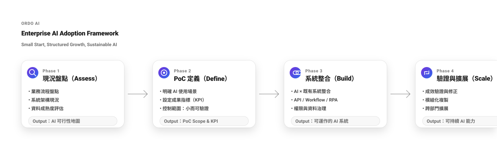

Build AI into operations.
ORDO AI 讓 AI 不只是回答，而是能理解流程、協助執行、可治理、可擴張。 我們以「快速開發 × 快速導入」交付成果，並提供雲端、地端與雲加地混合部署，滿足不同資安與現場限制。
ORDO AI 是「企業 AI 作業系統」與「導入框架」：用可複製的方法把 AI 做進流程與系統， 並確保可治理、可維運、可擴張。
AI 導入卡關，通常不是模型問題
多數組織缺的不是更多 AI 工具，而是一套可落地、可治理、可擴張的導入方式與系統架構。
AI 很多但彼此不通，難以成為可運作的系統。
會回答不等於會做：缺少流程與回寫能力。
做得出來但擴不出去：缺乏模組化與治理設計。
服務端 × 產品端，一套完整交付
服務端提供快速開發與導入節奏；產品端提供雲端、地端（整體方案 / 一機式）與雲加地混合部署， 讓您從 PoC 到規模化一路可走。
以 AI 加速需求釐清、架構設計與開發交付；並用導入框架推進 Assess → Define → Build → Scale， 每一步都有交付件，避免停在 PoC。
- 快速開發：規格 → 架構 → 開發 → 部署（短週期迭代）
- 快速導入：每階段可驗證成果與 KPI
- 可擴張：把成功模組化複製到跨部門流程
依資安與現場限制選擇最適部署方式：雲端快速擴展、地端整體方案、一機式快速複製，以及雲加地兼顧安全與效率。
- Cloud：最快啟用與擴展
- On-Prem Suite：地端整體方案（權限 / 稽核 / 內網整合）
- Appliance：一機式方案（分點/門市/工廠快速落地）
- Hybrid：雲加地（敏感資料不出網 + 彈性算力）
雲端 / 地端整體方案 / 一機式 / 雲加地
你不用為了導入 AI 改變你的資安策略。ORDO AI 提供完整部署選項，讓 AI 能在你允許的邊界內運作。
- 快速啟用、跨部門擴張
- 集中更新與版本管理
- 整合企業 SaaS / API
- 權限、稽核、資料治理
- 內網系統整合與網段設計
- 符合政府/金融/製造需求
- 一台機器即部署
- 分點/門市/工廠現場
- 可控成本、快速擴點
- 敏感資料留地端
- 雲端彈性算力與更新
- 導入更平滑、可持續
先用 一機式 / 地端 快速在現場跑出可驗證成果，再視資安與擴張需求導入 Hybrid， 讓資料留在該留的地方，同時保有雲端擴展能力。
快速導入不是口號，是交付節奏
ORDO AI 以四階段導入框架推進，每一步都定義清楚「要交付什麼」，確保可驗證、可複製、可治理。
- 現況盤點（Assess）：流程 / 系統 / 資料成熟度 → AI 可行性地圖
- PoC 定義（Define）：場景與 KPI → PoC Scope & KPI
- 系統整合（Build）：API / Workflow / RPA + 治理 → 可運作的 AI 系統（含回寫）
- 驗證擴展（Scale）：成效驗證、模組化複製 → 擴展方案與治理節點
一個「可跑的系統」+ 一套「可擴張的方法」。不只做出 PoC，而是把成功變成能力。

把 AI 變成可執行的流程能力
下面是最常見且最容易形成擴張效益的場景組合。
帶權限與資料來源治理的問答與查詢，避免「答錯、答超出權限」。
查詢 → 判斷 → 回寫；把 AI 做成流程節點，而不是聊天機器人。
可追溯的文件產出（摘要、比對、生成），並可接入審核流程。
辨識 → 比對 → 回應；可應用於商品、設備、現場檢核等。
規格 → 程式 → 部署，縮短交付週期並降低溝通成本。
把企業既有系統串成可運作流程，讓 AI 成為協作層。
企業 AI 架構，應該像系統而不是工具
以流程為核心，串接資料與系統，並以權限、稽核確保可控與可追溯。
Web / H5 / API（Chat / Workflow UI）
Workflow Engine / Agents / LLM Router
文件、DB、Vector DB（RAG）、版本與權限
API / Webhook / RPA / 外部系統回寫（可依需求整合 ERP、CRM、表單、工單、訂位等）
治理為設計基礎：可控、可追溯、可合規
不是導入後才補資安，而是從一開始就把權限、稽核與資料治理納入設計，支援企業與政府場景。
- 使用者 / 部門 / 角色分級
- 資料來源控管與可追溯性
- 敏感資料可採不出網策略
- Log / Audit / Traceability
- 流程執行紀錄可回放（依專案設計）
- 模型策略可切換（雲端 / 私有）
預約 15 分鐘導入評估
我們會快速確認：你最值得先做的 AI 場景、預期 KPI、資料與系統整合路徑，以及適合的部署型態（雲 / 地 / 混合）。
讓你的 AI 先跑起來，再擴張成能力
先用小而可驗證的場景跑出成果，再用模組化方式擴展到跨部門流程與多據點（含一機式快速複製）。
Email：Zeus@ordoai.co ｜ LINE： ｜ Company：ORDO AI Team